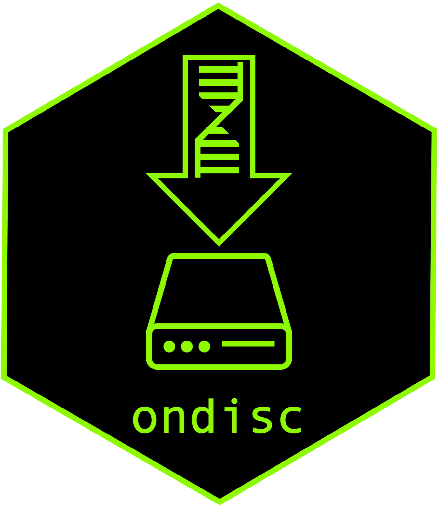

ondisc
Single-cell datasets are growing in size, posing challenges as well as opportunities to genomics researchers. ondisc is an R package for computing on large-scale single-cell data. ondisc enables the analysis of data out-of-core on a laptop or distributed across multiple nodes on a computing cluster. In both settings ondisc requires only a few gigabytes of memory, even if the input data are tens of gigabytes in size. ondisc is oriented toward single-cell differential expression, single-cell co-expresssion, and single-cell CRISPR screen analyses.
ondisc is a companion package to sceptre, an R package for statistically rigorous and user-friendly single-cell CRISPR screen analysis. Although ondisc and sceptre work best in conjunction, ondisc can be used independently of sceptre (and conversely, sceptre can be used independently of ondisc).
Get started
We recommend getting started by reading the ondisc vignette. Please submit issues on the ondisc Github page.